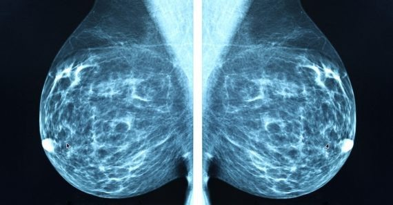

ما هو الماموغرام؟
صورة أشعة خاصة بالثدي بجرعة منخفضة جداً، يلتقطها جهاز مخصّص بينما يُضغط الثدي برفق لثوانٍ قليلة لتظهر الصورة واضحة.

كيف يتم الفحص؟ خطوة بخطوة
- قبل الموعد
اختاري أسبوعاً بعد الدورة الشهرية، وتجنّبي مزيل العرق والبودرة يوم الفحص لأنها قد تظهر في الصورة.
- الاستعداد
ترتدين رداء الفحص، وتخبرين أخصائية الأشعة بأي أعراض أو فحوصات سابقة.
- وضع الثدي
تقفين أمام الجهاز، وتضع الأخصائية الثدي على لوح التصوير.
- الضغط لثوانٍ
ينزل لوح شفاف ليضغط الثدي برفق؛ هذا يوزّع الأنسجة ويقلّل الجرعة ويُوضّح الصورة.
- صورتان لكل ثدي
عادةً من أعلى ومن الجانب المائل، ويستغرق الفحص كله نحو ٢٠ دقيقة.
- القراءة والنتيجة
يقرأ طبيب الأشعة الصور ويقارنها بالسابقة إن وُجدت، ثم تصلكِ النتيجة.
لماذا هو مهم؟
يكشف تكلّسات صغيرة جداً قبل أن تُلمس أو تظهر أي أعراض.
كلما اكتُشف المرض مبكراً كان العلاج أبسط وفرص الشفاء أعلى.
يستغرق دقائق، والضغط ثوانٍ فقط، وجرعة الإشعاع منخفضة جداً.
يُنصح به عادةً من سن ٤٠ كل ١–٢ سنة حسب توصية الطبيب.
معلومة تطمئنكِ
قد تشعرين بضغط بسيط لثوانٍ، ثم ينتهي.
وإن احتاج الأمر صوراً إضافية، فهذا لا يعني وجود مرض.
استمري في الفحص الذاتي الشهري حتى مع الماموغرام.